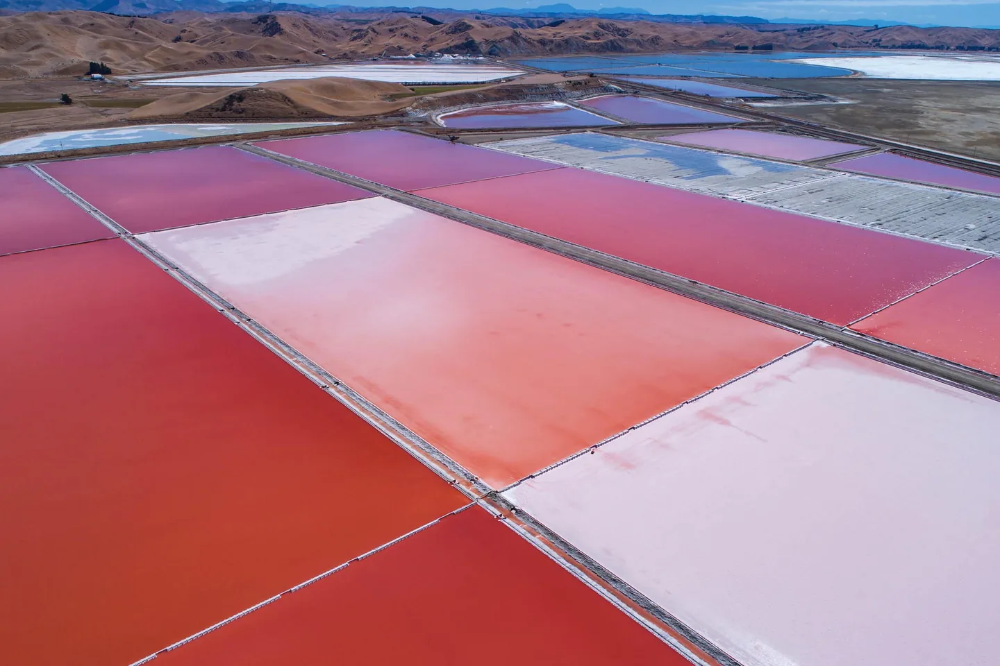
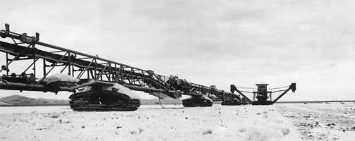
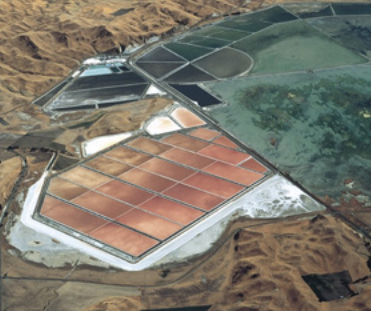
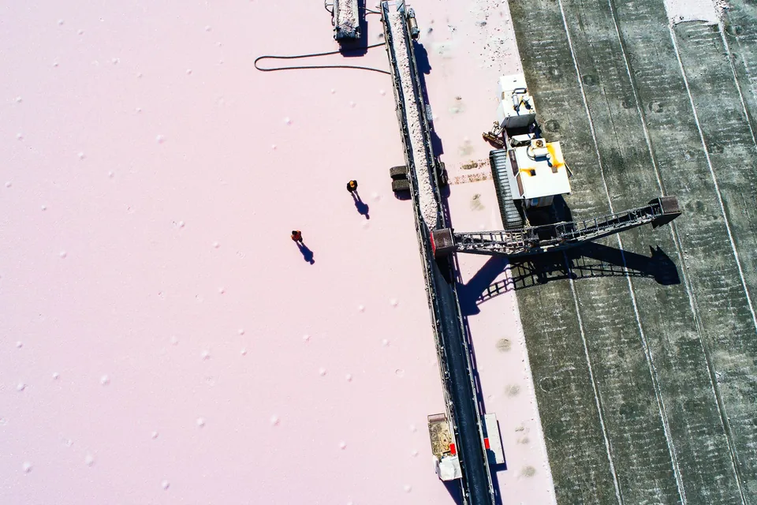
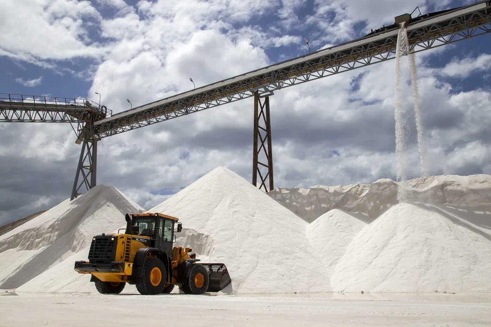
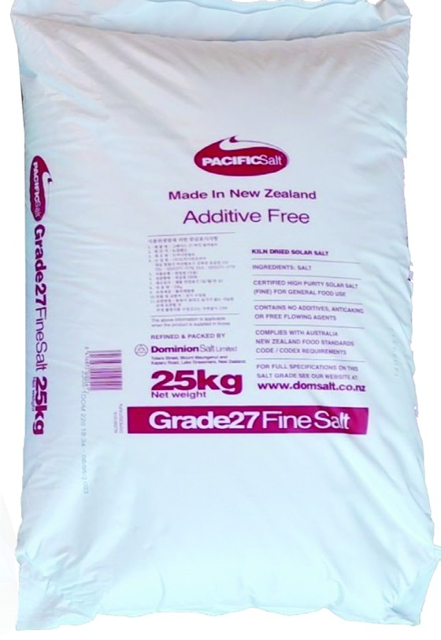

뉴질랜드 레이크 그래스미어
바다에서 고운 소금까지
-

취수 · 농축바닷물을 들여 여러 농축지에서 햇빛과 바람으로 농도를 높입니다. -

결정화포화된 염수를 결정지로 옮겨 바닥에 소금 결정을 키웁니다. -

수확 · 1차 세척남은 염수를 빼고 결정을 수확합니다. 염수로 씻은 뒤 쌓아 보관합니다. -
고운 입자로 완성
분쇄·재세척한 소금을 가마에서 건조합니다. 체로 고운 입자를 선별해 포장합니다.
생산 현장 사진 4장 더 보기




사진 Dominion Salt · 증발지·결정지·작업로 촬영 JTP©
공정 자료 레이크 그래스미어 염전 안내 · Grade 27 제품 안내
Grade 27 Fine Solar Salt
5kg · 10kg · 25kg


사진은 10kg·25kg 포장 예시입니다. 실제 포장 디자인은 공급 시점에 따라 달라질 수 있습니다.
- 제조원
- Dominion Salt Limited
- 국내 판매원
- 태장 주식회사
- 자회사형 장애인 표준사업장 · 제2026-049호
제품 표시·인증
제품 라벨과 규격
25kg 참고 라벨의 원재료 표기는 Salt입니다. 용량별 제품 표시사항은 실제 공급 제품 라벨을 기준으로 확인해 주세요.
제조원 등록·인증 자료
- 뉴질랜드 식품법 등록 · National Programme Level 3 (마운트마웅가누이·레이크 그래스미어 사업장)
- 할랄 인증 · FIANZ (마운트마웅가누이 사업장, 인증 범위에 Solar Salt 포함)
사업장 단위 등록·인증입니다. 적용 범위와 유효기간은 사본으로 안내합니다.
천일염 납품·견적 문의
필요한 규격, 수량, 수령 지역을 알려 주세요.